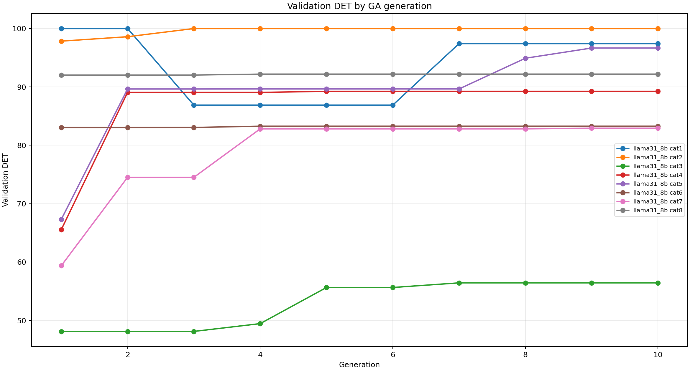
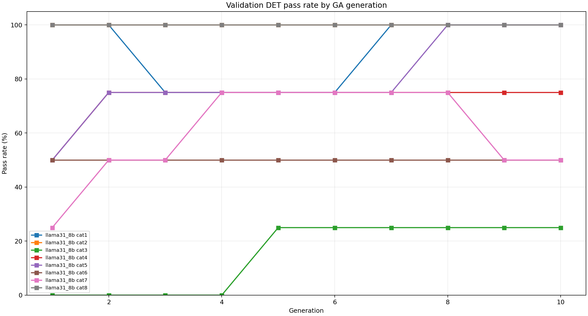
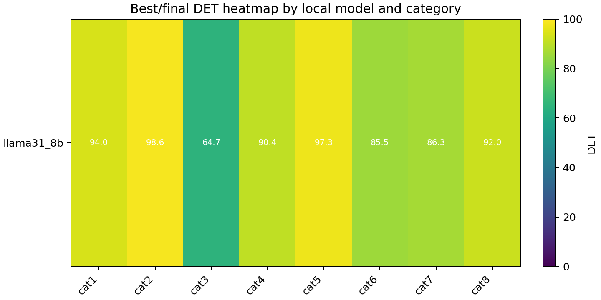
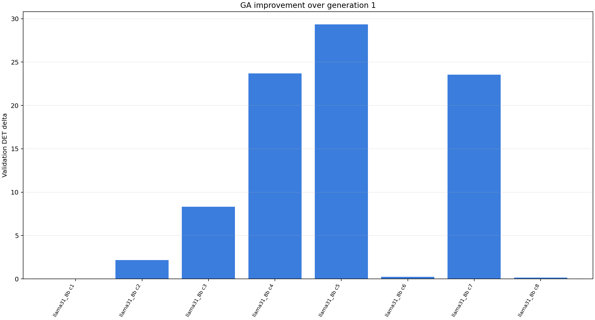
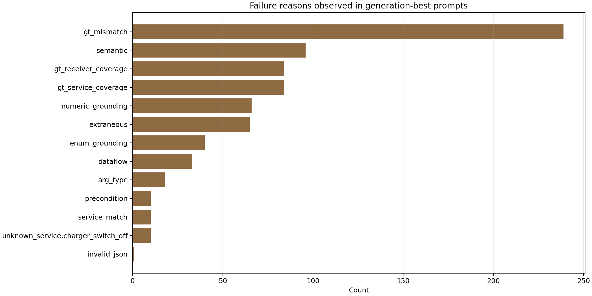

Best Results
| model | cat | rows | best gen | gen1 DET | best valid DET | delta | final DET | final pass | GT exact | run dir |
|---|---|---|---|---|---|---|---|---|---|---|
| llama31_8b | cat1 | 5 | 1 | 100.0000 | 100.0000 | +0.0000 | 93.9800 | 80.00% | 80.00% | /home/mgjeong/Desktop/llm/JOILang-Server/gpt_mg/version0_15_update20260413/results/paper_study_llama31_8b_20260513_221326/B6_full_gps_ga/runs/llama31_8b/cat1 |
| llama31_8b | cat2 | 5 | 3 | 97.8422 | 100.0000 | +2.1578 | 98.6406 | 100.00% | 80.00% | /home/mgjeong/Desktop/llm/JOILang-Server/gpt_mg/version0_15_update20260413/results/paper_study_llama31_8b_20260513_221326/B6_full_gps_ga/runs/llama31_8b/cat2 |
| llama31_8b | cat3 | 5 | 7 | 48.1125 | 56.4302 | +8.3177 | 64.6772 | 40.00% | 0.00% | /home/mgjeong/Desktop/llm/JOILang-Server/gpt_mg/version0_15_update20260413/results/paper_study_llama31_8b_20260513_221326/B6_full_gps_ga/runs/llama31_8b/cat3 |
| llama31_8b | cat4 | 5 | 5 | 65.5457 | 89.2451 | +23.6994 | 90.4091 | 80.00% | 0.00% | /home/mgjeong/Desktop/llm/JOILang-Server/gpt_mg/version0_15_update20260413/results/paper_study_llama31_8b_20260513_221326/B6_full_gps_ga/runs/llama31_8b/cat4 |
| llama31_8b | cat5 | 5 | 9 | 67.3036 | 96.6630 | +29.3594 | 97.3304 | 100.00% | 60.00% | /home/mgjeong/Desktop/llm/JOILang-Server/gpt_mg/version0_15_update20260413/results/paper_study_llama31_8b_20260513_221326/B6_full_gps_ga/runs/llama31_8b/cat5 |
| llama31_8b | cat6 | 5 | 4 | 83.0444 | 83.2696 | +0.2252 | 85.5335 | 60.00% | 0.00% | /home/mgjeong/Desktop/llm/JOILang-Server/gpt_mg/version0_15_update20260413/results/paper_study_llama31_8b_20260513_221326/B6_full_gps_ga/runs/llama31_8b/cat6 |
| llama31_8b | cat7 | 5 | 9 | 59.3711 | 82.9235 | +23.5524 | 86.3388 | 60.00% | 40.00% | /home/mgjeong/Desktop/llm/JOILang-Server/gpt_mg/version0_15_update20260413/results/paper_study_llama31_8b_20260513_221326/B6_full_gps_ga/runs/llama31_8b/cat7 |
| llama31_8b | cat8 | 5 | 4 | 92.0326 | 92.1902 | +0.1576 | 91.9637 | 100.00% | 0.00% | /home/mgjeong/Desktop/llm/JOILang-Server/gpt_mg/version0_15_update20260413/results/paper_study_llama31_8b_20260513_221326/B6_full_gps_ga/runs/llama31_8b/cat8 |
Validation Det By Generation

Validation Pass Rate By Generation

Best Det Heatmap

Improvement Vs Generation1

Failure Reason Counts
